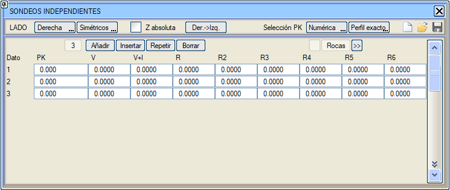

| |
|
BAĞIMSIZ SONDAJLAR
|
 HESAP BÖLGELERİ menüsünde Bağımsız seçeneği etkinleştirildiğinde, sondaj verilerinin tip kesitlerin hesaplama aralıklarından bağımsız olarak tanımlanmasına izin verilir. HESAP BÖLGELERİ menüsünde Bağımsız seçeneği etkinleştirildiğinde, sondaj verilerinin tip kesitlerin hesaplama aralıklarından bağımsız olarak tanımlanmasına izin verilir.[BAĞIMSIZ SONDAJLAR] menüsünde, HESAP BÖLGELERİ menüsü ile [SİMETRİK/ASİMETRİK] seçeneği paylaşılır. 
BAĞIMSIZ SONDAJ verileri yalnızca bir KM içerir, böylece iki veri arasındaki KM'lerde derinlikler enterpole edilebilir ve geçişler yapılabilir. Uçların dışındaki KM'lerde kalınlıklar ekstrapole edilir. KM sayısal olarak veya harita üzerine tıklayarak tanımlanabilir; bu durumda enkesitin enterpole edilip edilmeyeceği veya en yakın tam KM'ye yuvarlanacağı seçilebilir. Mutlak Z kutucuğu etkinleştirilerek, kotlar her bir jeolojik katman ekseninde derinlikler yerine mutlak olarak tanımlanabilir. |